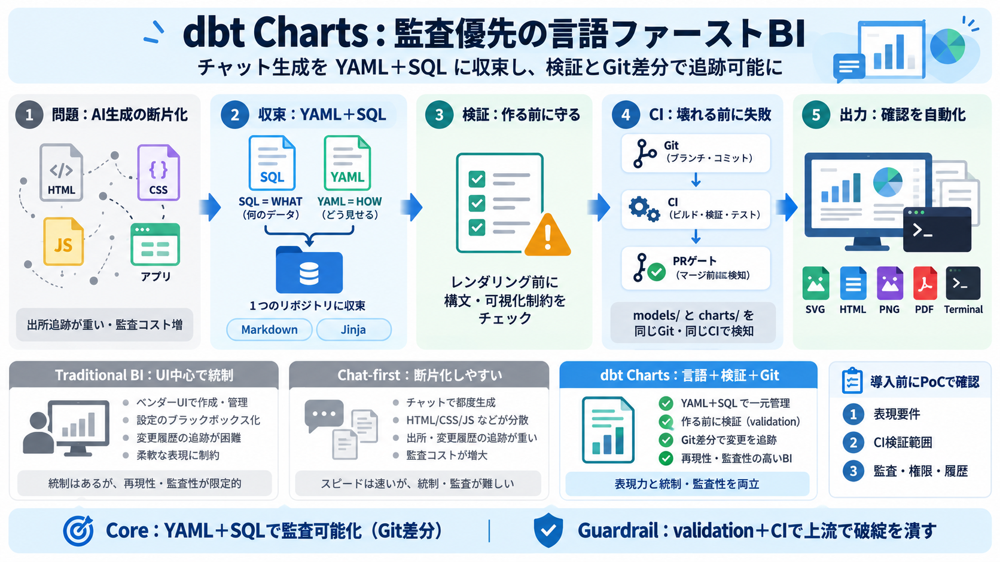

Migrate to the latest YAML spec | dbt Developer Hub
For dbt v2 and dbt users in the dbt platform CLI or locally with a valid `dbt_cloud.yml`: ``` dbt parse dbt parse d…

チャット生成の成果物を、YAML＋SQLに収束させ、検証（validation）とGit差分で根拠を追える形へ移す考え方です。/ 可視化レイヤー（Chart layer）をBIから切り出す。
AIでダッシュボードを作ると、HTML/CSS/JavaScript、複数ライブラリ、実行用アプリ（例：React/Streamlit）などに分散しやすく、出所追跡（監査）が重くなります。 さらに変更のたびに、生成側のトークン消費も増えがちです。
dbt ChartsはBI製品の中から“チャート層”を切り出し、宣言的言語（YAML）＋データ指定（SQL）で、監査可能な形に表現します。 チャットで生成しても、最終成果物は読みやすい1つの記述へまとまります。
SQLは何のデータを見せるか（WHAT）、YAMLはどう見せるか（HOW）を宣言します。 さらに説明文や動的要素としてMarkdownやJinjaも利用します。
YAMLとSQLの厳格な検証に加え、可視化固有のチェック（例：帯の幅不足、列のオーバーフロー等）をレンダリング前に警告します。 「作ってから気づく」を減らして、AI利用時の品質ブレを抑えます。
dbt parse dct validate render（SVG/HTML/PNG/PDF/terminal）
既存BIはUI上でAIを“狭いコントロール”に閉じ込め統制しがちです。 dbt Chartsは逆に、可視化を言語として統制し、オープンに検証できる状態を作ります。
ローカル描画としてSVG/HTML/PNG/PDF/ターミナルを想定し、CIでレンダリングして壊れていないことを確かめます。 これにより“確認”が人手ではなくパイプラインになります。
チャート言語（オープンソース）はローカルでも動かせ、UIやホスティング、アクセス制御はdbtCharts.com側に分離され得ます。 会話型編集は「プラットフォーム」、統制は「言語＋Git」に寄せる設計です。
本文情報は主に設計思想に寄っており、権限モデル・運用フロー・移行コストなどの定量は不足しています。 そのため私は、次をPoCで突き合わせるべきだと考えます。
dbt Chartsの中心は「チャットで作る→しかし成果物は監査可能なコードに収束→レンダリング前検証→CIで早期失敗」です。 うまくハマれば、AIと人の協働を“安全・監査・品質”で支える基盤になり得ます。
For dbt v2 and dbt users in the dbt platform CLI or locally with a valid `dbt_cloud.yml`: ``` dbt parse dbt parse d…
1. You define semantic models in YAML files that describe your data, including entities (for joins), measures (with aggr…
Complete, exhaustive configuration reference for semantic models, metrics, and dimensions. #### Migrate to the latest Y…
Support listing metrics defined in the project Listing available dimensions based on one or many metrics Querying defi…
Now dbt knows: Model → Dashboard ## 8️. Metrics in YAML (Semantic Layer) You can define KPIs centrally. Example: m…